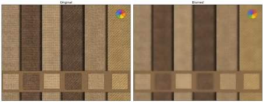

Data Scientist # Projet 6
Classifiez automatiquement des biens de consommation
Florian LOTTE

Florian LOTTE
10 ans d'experience en développement
- Développeur embarqué C++/Java (6 ans)
- Développeur backend Python (2 ans)
- Développeur blockchain IOT Scala (1 an)
Problématique
Une entreprise "Place de marché" souhaite lancer une marketplace e-commerce.
Les articles sont catégorisés manuellement par les vendeurs donc peu fiable.
Pour améliorer l'UX, il devient nécéssaire d'automatiser cette tâche de catégorisation.
Réaliser une première étude de la faisabilité d'un moteur de classification :
- Analyser le jeu de données
Prétraitement des descriptions des produits et des images, - Une réduction de dimension,
- Un clustering.
Le résultat sera présenté sous forme de graphiques et un calcule de similarité entre les catégories réelles et les clusters
Jeux de données
Données sous forme d'une archive zip avec images et descriptions
- Dataset - projet pre-traitement textes images
- Fichier des dercriptions
- flipkart_com-ecommerce_sample_1050.csv
- 1050 lignes
- 50 features
- Dossier Images
- [UUID].jpg
- 1050 images
Exploration des données
Dataframe initiale
Normalisation des données
def product_specification_decode(json_str):
s = json_str.lower().replace("=>", ':').replace('{"product_specification":nil}', '{"product_specification":""}')
return json.loads(s)
def product_category_tree_decode(json_str):
cat_list = json.loads(json_str.lower())
assert(isinstance(cat_list, list))
assert(len(cat_list) == 1)
return [s.strip() for s in cat_list[0].split('>>')]
data['uniq_id'] = data['uniq_id'].apply(lambda x: uuid.UUID(x))
data['crawl_timestamp'] = data['crawl_timestamp'].apply(lambda x: pd.to_datetime(x))
data['retail_price'] = data['retail_price'].astype('float64')
data['discounted_price'] = data['discounted_price'].astype('float64')
data['product_rating'] = data['product_rating'].replace(['No rating available'], -1.0)
data['overall_rating'] = data['overall_rating'].replace(['No rating available'], -1.0)
data['product_rating'] = data['product_rating'].astype('float64')
data['overall_rating'] = data['overall_rating'].astype('float64')
data['brand'].fillna('', inplace=True)
data['product_specifications'].fillna('{"product_specification":""}', inplace=True)
data['product_specifications'] = data['product_specifications'].apply(product_specification_decode)
data['product_category_tree'] = data['product_category_tree'].apply(product_category_tree_decode)
data[[f"product_category_{i}" for i in range(7)]] = pd.DataFrame(data['product_category_tree'].tolist(), index= data.index)
data['description'] = data['description'].apply(lambda x: x.lower())
data['product_name'] = data['product_name'].apply(lambda x: x.lower())
data['product_name_description'] = data['product_name'] + ' ' + data['description']
data.set_index('uniq_id', inplace=True, verify_integrity=True)
Dataframe normalisée
Catégorie 0
home furnishing 150
baby care 150
watches 150
home decor & festive needs 150
kitchen & dining 150
beauty and personal care 150
computers 150
Catégorie 1
wrist watches 149
laptop accessories 87
infant wear 84
coffee mugs 74
showpieces 71
bed linen 65
fragrances 65
network components 49
cookware 27
table decor & handicrafts 27
combos and kits 24
wall decor & clocks 22
bath linen 21
curtains & accessories 19
makeup 18
baby bedding 15
body and skin care 15
baby & kids gifts 15
baby bath & skin 14
kitchen tools 14
kitchen & dining linen 14
decorative lighting & lamps 14
containers & bottles 13
cushions, pillows & covers 13
hair care 9
feeding & nursing 8
bar & glassware 8
bath and spa 7
health care 7
lighting 7
diapering & potty training 7
floor coverings 6
living 6
flowers, plants & vases 5
showpiece 5
baby grooming 4
computer peripherals 4
religion & devotion 3
tablet accessories 3
living room furnishing 3
tableware & cutlery 3
computer components 2
laptops 2
eye care 2
storage 2
furniture & furnishings 2
dinnerware & crockery 1
garden & leisure 1
clocks 1
housekeeping & laundry 1
men's grooming 1
women's hygiene 1
pressure cookers & pans 1
tidy home furnishing 1
strollers & activity gear 1
software 1
candles & fragrances 1
consumables & disposables 1
true home decor & festive needs 1
jmd home furnishing 1
kripa's home furnishing 1
beauty accessories 1
Dataframe finale
Qu'est ce que le NLP
Natural Language Processing
Le traitement automatique du langage naturel est un domaine multidisciplinaire impliquant la linguistique, l'informatique et l'intelligence artificielle, qui vise à créer des outils de traitement de la langue naturelle pour diverses applications
Lemmatisation
La lemmatisation désigne un traitement lexical apporté à un texte en vue de son classement dans un index ou de son analyse. Ce traitement consiste à appliquer aux occurrences des lexèmes sujets à flexion (en français, verbes, substantifs, adjectifs) un codage renvoyant à leur entrée lexicale commune (« forme canonique » enregistrée dans les dictionnaires de la langue, le plus couramment), que l'on désigne sous le terme de lemme.
Stemming
La racinisation est un procédé de transformation des flexions en leur radical ou racine. La racine d’un mot correspond à la partie du mot restante une fois que l’on a supprimé son (ses) préfixe(s) et suffixe(s), à savoir son radical. Contrairement au lemme qui correspond à un terme issu de l’usage ordinaire des locuteurs de la langue, la racine ne correspond généralement qu’à un terme résultant de ce type d’analyse. Par exemple, le mot chercher a pour radical cherch qui ne correspond pas à un terme employé en dehors d’une référence à ce radical même.
Catégorisation de la description à l'aide d'un
bag of word
Count Vectorizer
Catégorisation de la description à l'aide de
Tf-Idf
\[\begin{aligned} tfidf(t,d,D) & = tf(t,d) . idf(t,D) \end{aligned} \]
Catégorisation de la description à l'aide de
Word2Vec
Word2vec est un groupe de modèles utilisé pour le "word embedding".
Ces modèles ont été développés par une équipe de recherche chez Google sous la direction de Tomas Mikolov.
Ce sont des réseaux de neurones artificiels à deux couches entraînés pour reconstruire le contexte linguistique des mots.
Catégorisation de la description à l'aide de
Bert
BERT, acronyme anglais de Bidirectional Encoder Representations from Transformers, est un modèle de langage développé par Google en 2018. Cette méthode a permis d'améliorer significativement les performances en traitement automatique des langues.
Catégorisation de la description à l'aide de
USE

Tratement des images
Contraste/Luminosité (Mertenes Fusion)

Débruitage (Bilateral Filtering)
Egalisation de l'histograme (CLAHE)


Catégorisation des images à l'aide de
SIFT
Sift
La Scale-Invariant Feature Transform, est un algorithme utilisé dans le domaine de la vision par ordinateur pour détecter et identifier les éléments similaires entre différentes images numériques.
L'étape fondamentale consiste à calculer ce que l'on appelle les « descripteurs SIFT » des images à étudier.
Il s'agit d'informations numériques dérivées de l'analyse locale d'une image et qui caractérisent le contenu visuel de cette image de la façon la plus indépendante possible de l'échelle, du cadrage, de l'angle d'observation et de l'exposition.
Sift descriptors


Catégorisation des images à l'aide du
CNN VGG16
VGG16

Catégorisation des images à l'aide du
CNN InceptionV3
InceptionV3

Catégorisation des images à l'aide du
CNN ResNet50V2
ResNet50V2

Conclusion
Tf-Idf TSNE 2D => ARI = 0.57
VGG16 TSNE 3D => ARI = 0.45